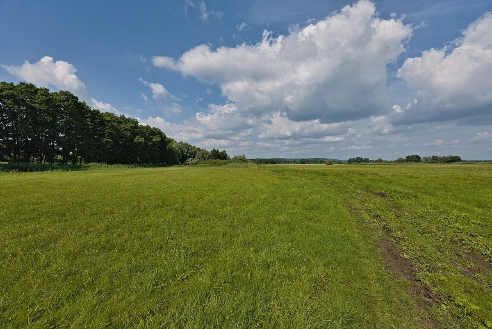
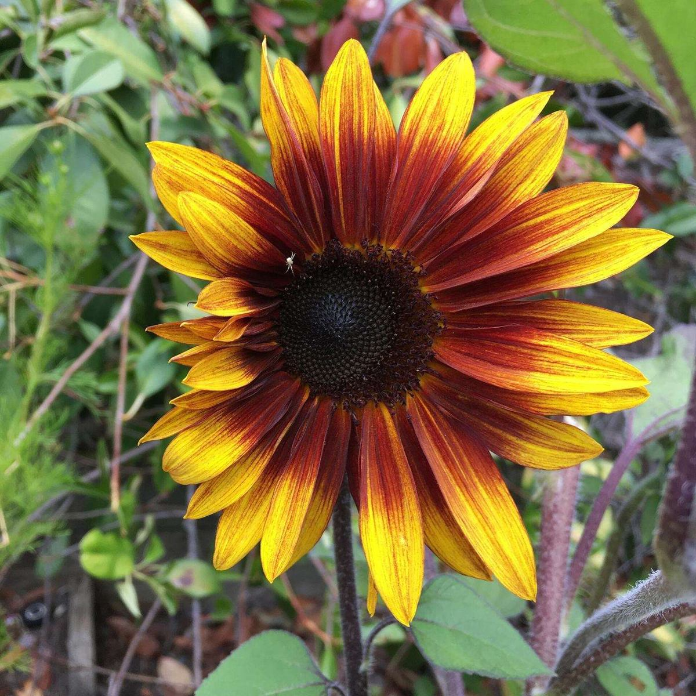

パン / 富山県富山市
サワダ・クラフトベイカリー
パン屋「サワダ・クラフトベイカリー」のご案内ページです。営業時間やメニューなど、詳しいことは準備中。まずはInstagramをのぞいてみてください。
ペイント缶の配置図(部位は6つ)
制作側の連想
ペイント缶の部位の配置図
このサイトは「ペイント缶」を横から見た配置図をモチーフにしています。部位は6つ。番号を振った図と、各ページの見出しがつながっています。制作側の連想で、お店の理念・由来とは無関係です。お店で扱う品物を示すものでもありません。


写真はパンや草地のイメージです。お店で提供している商品や周辺を示すものではありません。
部位の一覧
6つの部位
- 1
ふた
缶の口をふさぐ円盤。外周をリムのくぼみにはめ込んで閉じます。
- 2
リム(口縁)
缶の上端をくるりと巻いた縁。ふたの外周を受け止めます。
- 3
ベイル
両側の耳に掛けた針金の持ち手。中ほどに握りが付くものがあります。
- 4
缶胴
缶の筒の部分。薄い金属板を丸めて作られ、上下に補強の段が入ります。
- 5
ラベル
胴に貼られた、色の名前や使い方を書いた札。図では色のついた長方形です。
- 6
缶底
胴の下端を巻き込んで留める円盤。缶全体の土台になります。



ギャラリー(イメージ)
図の余白に、写真を。


写真はフリー素材のイメージです。お店のものではありません。
ご案内
お店のこと(確認できたものだけ)
| 所在地 | 〒939-2622 富山県富山市婦中町千里996-6 |
|---|---|
| 電話 | 準備中 |
| 営業時間 | 準備中 |
| 定休日 | 準備中 |
| ご予約 | 準備中 |
| 駐車場 | 準備中 |
| SNS | Instagram @swdscraftbakery |